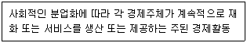
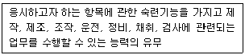
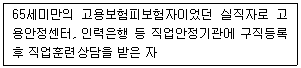
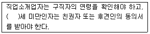

직업상담사-2급(구) (2004-03-07 기출문제)
1과목: 직업상담ㆍ심리학
1. 다음 중 조직에서 자신이 생각하는 역할과 상급자가 생각하는 역할간의 차이에 기인한 스트레스원은?
- 역할과다
- 역할모호성
- 역할갈등
- 과제 곤란도
(정답률: 알수없음)

2. Williamson(1939)의 변별진단에서의 4가지 결과가 아닌 것은?
- 직업선택에 대한 확신 부족
- 직업 무선택
- 정보의 부족
- 흥미와 적성간의 모순
(정답률: 알수없음)
3. 직무분석을 하는 주된 목적에 해당되지 않는 것은?
- 직무평가, 조직 합리화, 채용 및 승진 등 인사관리
- 안전교육 및 훈련, 직무설계
- 직업표준과 동등한 고용기회의 제공
- 작업방법 및 작업공정의 개선
(정답률: 알수없음)
4. 직업적성검사에서 20점 만점 중 15점을 받아 그 점수가 그대로 기록되었다면 이 점수는?
- 백분위점수(percentile score)
- 표준점수(standard score)
- 진점수(true score)
- 원점수(raw score)
(정답률: 알수없음)
5. 갑자기 구조조정 대상이 되어 직장을 떠난 40대 후반의 남성이 상담을 받으러 왔다. 전혀 눈 마주침도 못하고 상당히 위축되어 있는 상태이고 미래에 대한 불안감을 호소하고 있다. 이 내담자를 상담한다면 가장 먼저 해야 할 것은?
- 관계 형성
- 상담자의 전문성 소개
- 상담 구조 설명
- 과제 부여
(정답률: 알수없음)
6. 직무분석의 방법 중 비교확인법의 설명으로 맞는 것은?
- 분석자 자신이 직무활동에 직접 참여하여 생생한 작업분석 자료를 얻는 방법이다.
- 분석자가 작업장을 방문하여 직무활동을 관찰하고 그결과를 기술하는 방법이다.
- 분석대상의 직업에 대한 자료가 드물 때 사용하는 방법이다.
- 수행하는 작업이 다양하고 직무의 폭이 넓어 단시간의 관찰을 통해서 분석하기 어려운 경우에 적합한 방법이다.
(정답률: 알수없음)
7. 다음 중 직무 분석의 원칙으로 옳지 않 은 것은?
- 직무에 대한 정확하고 완전한 확인
- 조직의 체질 개선을 위한 전반적 요구 분석
- 직무에 포함되어 있는 과제들에 대한 완전하고 정확한 기록
- 직무 수행을 위해 작업자에게 요구되는 요건의 명시
(정답률: 알수없음)
8. 직무평가방법인 점수법에 대한 설명으로 맞는 것은?
- 소규모 조직의 직무평가에 활용하기 쉽다.
- 비계량적인 직무평가 방법에 속한다.
- 직무평가 과정에서 평가자들의 주관적 판단이 개입될 소지가 있다.
- 임금수준에 맞는 정교한 임금체계 설정을 할 수 있다
(정답률: 알수없음)
9. 다음 중 미네소타 직업분류체계 Ⅲ와 관련되어 발전된 이론은?
- 긴즈버그(Ginzberg)의 발달이론
- 수퍼(Super)의 평생발달이론
- 직업적응이론
- 로(Roe)의 욕구이론
(정답률: 알수없음)
10. 다음 중 직무분석을 통해 얻어진 정보의 용도로 옳지 않은 것은?
- 직무를 성공적으로 수행하는데 필요한 속성들을 알게 해준다.
- 서로 다른 직위들을 직무로 묶어 상위의 직무군을 형성하기 위한 기초자료로 사용한다.
- 조직 내에서 직무들의 상대적인 가치를 평가하고 임금수준을 결정하도록 해준다.
- 직무 수행에 필요한 교육의 내용을 결정하는데 사용
(정답률: 알수없음)
11. 다음 중 스트레스에 대한 설명으로 틀린 것은?
- 스트레스 여부는 상황에 대한 개인의 주관적 해석에 의존한다.
- 스트레스 여부는 상황에 대한 통제 가능성에 의존한다.
- A유형의 사람들이 스트레스원에 민감하다.
- 외적 통제자가 스트레스 상황에 대한 대처능력이 뛰어나다.
(정답률: 알수없음)
12. 개인적 부적응의 행동을 보이는 내담자가 취업상담을 원할 때 우선 고려해야할 점은?
- 성취검사
- 능력검사
- 부적응 행동의 수준평가 및 치료
- 가족력
(정답률: 알수없음)
13. 다음 중 검사의 신뢰도 계수로 볼 수 없는 것은?
- 1.2
- -0.3
- 0
- 0.7
(정답률: 알수없음)
14. 심리검사 결과 해석에 있어 상담자의 행동으로 옳은 것은?
- 검사결과에 대하여 전문적인 용어를 사용한다.
- 검사점수를 그대로 전한다.
- 상담자의 주관적 판단은 배제하고 검사점수에 대하여 중립적인 입장을 취한다.
- 내담자의 반응은 고려하지 않는다.
(정답률: 알수없음)
15. 직업 상담을 할 경우 적절한 내담자에 있어 목표로 가져야 할 중요한 특성이 아닌 것은?
- 상담자가 바라는 것이어야 한다.
- 구체적이어야 한다.
- 실현 가능해야 한다.
- 상담자의 기술과 양립 가능해야 한다.
(정답률: 알수없음)
16. 다음 중 생애진로사정(life career assessment)과 관련이 없는 것은?
- 생애진로사정은 아들러(Adler)의 개인 심리학에 이론적 기초를 두고 있다.
- 생애진로사정의 구조는 진로사정, 전형적인 하루, 강점과 장애 및 요약으로 이루어진다.
- 생애진로사정은 직업상담의 마무리 단계로서 최종결론을 도출하기 위한 시도이다.
- 생애진로사정은 구조화된 면담기술로서 짧은 시간에 체계적인 정보를 수집할 수 있다.
(정답률: 알수없음)
17. 개인관련 스트레스 요인 중 A유형 행동이 아닌 것은?
- 책임을 피한다.
- 쉽게 화를 낸다.
- 늘 경쟁적 성취욕으로 가득 차 있다.
- 많은 일을 성취하려 한다.
(정답률: 알수없음)
18. 일반적으로 상담자가 갖추어야 할 다음의 기본 기술들 중 "내담자가 전달하려는 내용에서 한 걸음 더 나아가 그 내면적 감정에 대해 반영하는 것"을 무엇이라 하는가?
- 해석
- 공감
- 직면
- 명료화
(정답률: 알수없음)
19. 다음 중 직무 평가에 대한 설명으로 틀린 것은 ?
- 대표적인 직무 평가방법 중 하나는 PAQ(Position Analysis Questionnaire)방법이다.
- 직무간의 내용과 성질에 따라 임금 형평성을 결정할 수 있다.
- 직무의 상대적 가치를 결정하므로 직무 분석과는 달리 직무에 대한 가치 판단이 개재될 수 있다.
- 직무 평가방법들 간의 차이는 조직 성공 기여도, 노력정도, 작업조건 등 주로 비교과정에 어떠한 준거를 사용하는 지에 달려있다.
(정답률: 90%)
20. 직무분석을 위한 면접 시 유의사항이 아닌 것은?
- 면접자의 개인적인 견해나 선호가 개입되지 말아야 한다.
- 노사 간의 불만이나 갈등에 관한 주제와 관련될 때 어느 한쪽 편을 들지 않는다.
- 면접을 통해 수집한 자료는 작업반장이나 부서장과 검토할 필요가 없다.
- 작업방법에 대해 비판하지 말고 변화나 개선을 제안하지 않는다.
(정답률: 알수없음)
21. 다음 중 직업의 요건에 대한 설명으로 틀 린 것은?
- 어떤 일이든 지속성이 있어야 한다.
- 직업은 자신의 주어진 환경 내에서 자유롭게 선택할 수 있다.
- 반드시 노동행위가 없더라도 직업이라고 할 수 있다.
- 일의 대가로 수입을 얻어 이를 통해 생계를 유지한다.
(정답률: 알수없음)
22. 필립스(Phillips)가 제시한 상담목표에 따른 진로문제의 분류 범주에 따를 경우 내담자가 자기의 능력이 어느 정도인지, 어떤 분야의 직업을 원하는지, 왜 일하는 것이 싫은지 등의 고민을 가지고 있는 경우 상담의 초점은 다음 중 어디에 두어야 하는가?
- 자기탐색과 발견
- 선택의 준비도
- 의사결정 과정
- 선택과 결정
(정답률: 알수없음)
23. 긴즈버그의 진로발달단계가 아닌 것은?
- 잠정기
- 환상기
- 현실기
- 탐색기
(정답률: 알수없음)
24. 작업동기 이론 중 노력, 성과, 그리고 도구성과의 관계에 의해 설명되는 이론은?
- 형평이론
- 강화이론
- 욕구이론
- 기대이론
(정답률: 알수없음)
25. 우리나라 직업상담자의 윤리강령 설명으로 옳지 않은 것은?
- 상담자는 상담에 대한 이론적, 경험적 훈련과 지식을 갖춘 것을 전제로 한다.
- 상담자는 내담자의 성장, 촉진과 문제 해결 및 방안을 위해 시간과 노력상의 최선을 다한다.
- 상담자는 자신의 능력 및 기법의 한계에도 불구하고 최선을 다하여 내담자를 끝까지 책임을 지도록 한다.
- 상담자는 내담자가 이해, 수용할 수 있는 한도 내에서 기법을 활용한다.
(정답률: 알수없음)
26. 직업상담 장면에서 활용 가능한 성격검사에 대한 설명 중 맞는 것은?
- 특정분야에 대한 흥미를 측정한다.
- 지능검사보다 특수하고 광범위한 영역의 능력을 측정한다.
- 대개 자기보고식 검사이며 널리 이용되는 검사는 다면적 인성검사(MMPI), 성격유형검사(MBTI) 등이 있다.
- 비구조적 과제를 제시하고 자유롭게 응답하도록 하여 분석하는 방식으로 웩슬러 검사가 있다.
(정답률: 알수없음)
27. 욕구위계이론과 가장 관련성이 큰 이론은?
- 형평이론
- 기대이론
- 존재, 관계, 성장(ERG)이론
- 목표설정이론
(정답률: 알수없음)
28. 다음 중 정상인의 성격을 기술하는 기본차원이라고 말하는 `Big Five`에 해당되지 않는 것은?
- 경험에 대한 개방성
- 외향성
- 정확성
- 호감성
(정답률: 알수없음)
29. 직업세계이해 프로그램에 대한설명 중 옳은 것은?
- 프로그램을 통해 직업정보를 충분히 제공할 수 있어야한다.
- 프로그램 종료 후 내담자의 직업선택으로 곧바로 연결되어야 한다.
- 내담자가 소화할 수 있는 정도의 정보가 제공된다.
- 직업정보를 스스로 수집하고 분석할 수 있도록 한다.
(정답률: 알수없음)
30. 상담의 효과를 검증하기 위한 ABAB 설계에 대한 설명으로 틀린 것은?
- 시간의 흐름에 따라 종속변인들을 반복적으로 측정한다.
- 처치를 제시하고 철회하는 것에 따른 행동 변화의 유무를 측정하고자 한다.
- 상담효과 연구를 위해, 처치를 하다가 철회한다는 것은 윤리적으로 문제가 될 수 있다.
- 처치에 따른 행동변화 이후에 처치를 철회했을 때 행동이 기저선 수준으로 되돌아간다면 상담 효과는 없는 것이다.
(정답률: 알수없음)
31. 직업발달이론에 관한 설명으로 틀린 것은?
- 특성요인이론은 Parsons의 직업지도모델에 기초하여 형성되었다.
- Super의 생애발달단계는 환상기-잠정기-현실기로 구분한다.
- 일을 승화의 개념으로 설명하는 이론은 정신분석이론이다.
- Holland의 직업적 성격유형론에서 중요시하는 개념은 일관도, 일치도, 분화도 등이다.
(정답률: 알수없음)
32. 경력개발프로그램에 있어서 종업원 개발 프로그램에 포함되지 않는 것은?
- 훈련 프로그램
- 평가 프로그램
- 후견인 프로그램
- 직무순환
(정답률: 알수없음)
33. 다음 중 Bordin의 정신 역동적 직업 상담에서 사용하는 기법이 아닌 것은?
- 명료화
- 비교
- 소망 방어 체계
- 감정에 대한 준 지시적 반응 범주화
(정답률: 알수없음)
34. 직업 상담에 있어 검사도구에 대해 내담자가 비현실적 기대를 가지고 있을 때 상담자가 취할 수 있는 적절한 행동은?
- 즉시 검사를 실시한다.
- 검사 사용 목적에 대하여 내담자에게 설명한다.
- 검사종류의 선택을 독단적으로 한다.
- 심리검사는 상담관계를 방해하므로 실시하지 않는다.
(정답률: 알수없음)
35. 내담자에 대한 직업상담의 목적이 아닌 것은?
- 직업목표를 명확하게 해준다.
- 상담능력을 향상시킨다.
- 의사결정능력을 증진시킨다.
- 자기를 성장시키는 능력을 기른다.
(정답률: 알수없음)
36. 왜곡된 사고체제나 신념체제를 가진 내담자에게 효과적인 상담기법은?
- 내담자 중심 상담
- 인지치료
- 정신분석
- 행동요법
(정답률: 알수없음)
37. 직무수행을 위한 선발, 훈련, 과업 배분의 단위가 되는 것은?
- 직업(occupation)
- 직무(job)
- 직군(job family)
- 요소작업(elements)
(정답률: 알수없음)
38. 다음 중 내담자 중심(인간중심)적 상담자가 심리검사를 사용할 때의 활동원칙으로 옳지 않은 것은?
- 검사결과의 해석에 내담자가 참여하도록 한다.
- 검사결과를 전할 때는 명확하게 하기위해 평가적인 언어를 사용한다.
- 내담자가 알고자하는 정보와 관련된 검사의 가치와 제한점을 설명한다.
- 검사결과를 입증하기 위한 더 많은 자료가 수집될 때 까지는 시험적인 태도로 조심스럽게 제시되어야 한다.
(정답률: 알수없음)
39. 직업상담사의 역할 중 맞지 않는 것은?
- 직업정보 분석
- 취업 알선과 직업소개
- 검사도구 해석
- 유관기관과의 협력체계 구축
(정답률: 알수없음)
40. 크릿츠(Crites)의 직업 선택 분류 유형에서 비현실형적 직업 선택 유형을 설명한 것은?
- 흥미를 느끼는 분야도 없고 적성에 맞는 분야도 없는 사람
- 흥미를 느끼는 분야는 있지만 그 분야에 대해 적성을 가지고 있지 못한 사람
- 흥미나 적성 유형에 상관없이 어떤 분야를 선택할 지 결정을 못한 사람
- 적성에 따라 직업을 선택했지만 그 직업에 대해 흥미를 못 느끼는 사람
(정답률: 알수없음)
2과목: 직업정보론(노동시장론 포함)
41. 실업정책은 크게 고용안정정책, 고용창출정책, 사회안전망 정책으로 나눌 수 있다. 다음 중 사회안전망 정책에 해당하는 것은?
- 실업급여
- 취업알선 등 고용서비스
- 창업을 위한 인프라 구축
- 직업훈련의 효율성 제고
(정답률: 알수없음)
42. 만일 통근비용(즉, 근로의 고정화폐비용)이 증가하면 근로시간은 어떻게 변할까?
- 일을 그만 두지 않는 한 근로시간은 증가한다.
- 일을 그만두든, 아니든 근로시간은 증가한다.
- 일을 그만 두지 않는 한 근로시간은 감소한다.
- 일을 그만 두든, 아니든 근로시간은 감소한다.
(정답률: 알수없음)
43. 우리나라의 항운노동조합에서 운영되고 있는 숍(shop)제도는?
- 오픈 숍(ppen shop)
- 클로즈드 숍(closed shop)
- 유니온 숍(union shop)
- 에이전시 숍(agency shop)
(정답률: 알수없음)
44. 표준직업분류상「항공기 조종사」는 어디에 속하는가?
- 전문가
- 기술공 및 준전문가
- 기능원 및 관련 기능 종사자
- 기계조작 및 조립 종사자
(정답률: 알수없음)
45. 다음은 무엇에 대한 내용인가?

- 직업
- 산업활동
- 일(task)
- 요소작업
(정답률: 알수없음)
46. 직업훈련의 강화에 따른 효과로 가장 옳지 않은 것은?
- 인력부족 직종의 구인난을 완화시킬 수 있다.
- 재직근로자의 직무능력을 높일 수 있다.
- 산업구조의 변화에 대응할 수 있다.
- 마찰적인 실업을 줄일 수 있다.
(정답률: 알수없음)
47. 직종과 직무내용에 관한 설명 중 옳은 것은?
- 컴퓨터조작원은 이용자의 요구에 따라 콘솔을 조작하고 결과를 스크린, 종이 등에 나타내도록 하는 일로 컴퓨터에 단순히 자료를 입력하는 경우에 해당된다.
- 기타 개인보호 및 관련 종사자는 신체적, 정신적 질환이나 장애 또는 노령으로 인한 장애 때문에 가정에서 보호가 필요한 사람에게 개인 시중을 들어주는 경우를 말한다.
- 사무지원 종사자는 일반사무직원을 보조하여 문서정리 및 수발, 워드프로세싱, 자료집계, 자료복사 등의 일을 수행하며 일반사무지원종사자, 자료입력사무 종사자와 비서가 이에 속한다.
- 기타 네트워크관련 전문가는 인터넷 또는 PC통신과 관련된 정보서비스 등의 각종 서비스를 개발하고 관련 정보를 제공하며 이를 운영하고 관리한다.
(정답률: 알수없음)
48. 직업사전에서 부동산중개인에 대한 직업명세 사항 중 기능란에 "자료(정서)/사람(설득)/사물(관련없음)"과 같이 기재되었다. 이 중 "자료(정서)"의 해설이 맞는 것은?
- 자료를 옮겨 쓰고 삽입하고 우송한다.
- 쉽게 관찰할 수 있는 기능, 구조, 구성상의 특성을 이해하며 특성이 명시된 표준과의 차이점을 비교한다.
- 자료를 조사·평가하고 평가에 관한 대안의 행동을 한다.
- 자료 분석을 근거로 하여 시간·장소·빈도수·순서 등을 결정하여 시행하고 그 결과와 과정을 보고한다.
(정답률: 알수없음)
49. 조직의 각 계층이 사용하는 정보의 특성에 관해 옳지 않은 것은?
- 운영 관리층이 요구하는 정보의 범위는 조직 외부에 초점을 둔다.
- 최고경영층이 필요한 정보는 간헐적으로 이용된다.
- 최고경영층의 정보는 비교적 미래지향적이다.
- 운영 관리층이 사용하는 정보는 매우 상세하다.
(정답률: 알수없음)
50. 다음 중 기업들이 기업 내의 승진정체에 대응하여 도입하고 있는 제도가 아닌 것은?
- 정년단축
- 자회사에의 파견
- 조기퇴직 유도
- 연봉제의 강화
(정답률: 알수없음)
51. 최저임금제도의 기본취지 및 효과에 대한 설명으로 틀린 것은?
- 저임금 노동자의 생활보호
- 산업평화의 유지
- 유효수요의 억제
- 산업간ㆍ직업간 임금격차의 축소
(정답률: 알수없음)
52. 한국직업사전에서 각 직업의 직업 명세란에 있으며 사물(things)에 관한 기능들 중 책임과 판단이 가장 복잡한 기능은 다음 중 어느 것인가 ?
- 설치
- 정밀작업
- 조절
- 운전
(정답률: 알수없음)
53. 다음 중 노동의 수요· 공급에 대한 설명으로 틀 린 것은?
- 총비용 중 노동비용(임금)의 비중이 클수록 노동수요의 탄력성은 커진다.
- 완전경쟁시장에서 노동수요를 결정하는 것은 노동의 한계생산물가치이다.
- 임금상승은 여가의 기회비용을 낮춤으로써 여가에 대한 선호를 증대시켜 노동공급을 감소시킨다.
- 자본소득, 주 소득자 외 다른 가족구성원의 소득이 증가하게 되면 노동공급시간이 감소하는 경향이 있다.
(정답률: 알수없음)
54. 한국표준직업분류체계에 대한 설명으로 틀린 것은?
- 한국표준직업분류체계는 4가지 직무능력수준을 설정하고 있는데 제1직능수준이 가장 높고 어려운 것이며 제4직능 수준이 가장 낮고 쉬운 것이다.
- 대분류, 중분류, 소분류, 세분류, 세세분류로 구성되어 있으며, 세세분류상의 직업에서는 직업에 대한 정의와 주요 업무, 포함 또는 미포함되는 직업명을 제시하고 있다.
- 세세분류 기준에서 가장 많은 직업은 장치, 기계조작원 및 조립원이다.
- 한국표준직업분류에서는 이자, 주식배당, 임대료 수입 등의 재산수입으로 생활하는 경우에는 직업으로 보지 않는다.
(정답률: 알수없음)
55. 완전경쟁시장에서 개별기업의 노동수요곡선이 우하향하는 이유는?
- 명목임금이 하락했기 때문에
- 물가가 상승했기 때문에
- 노동의 한계생산성이 체감하기 때문에
- 실질임금이 하락했기 때문
(정답률: 알수없음)
56. 산업기사 응시자격으로 옳지 않은 것은?
- 전문대학의 1학년 수료 후 중퇴자
- 기능장려법에 의하여 명장으로 선정된 자
- 학점인정 등에 관한 법률에 의거 40학점을 인정받은 자
- 기능사자격을 취득한 후 응시하고자 하는 종목이 속하는 동일 직무분야에서 1년 이상 실무에 종사한 자
(정답률: 알수없음)
57. 다음 중 한국표준직업분류외에서 대분류 5 [판매종사자]에 속하는 직업은?
- 간병인
- 약사보조원
- 미용사
- 주유원
(정답률: 알수없음)
58. 다음 중 립케(W. Ripke)가 말하는 인본적경제(Humaneeconomy)의 의미는?
- 경쟁적 시장에 사회적 형평성을 보장하는 국가 정책 및 제도가 있는 경제
- 완전 경쟁적 시장에 인간의 존엄성을 끝없이 추구하는 경제
- 정부통제하의 독과점주도의 성장 지향적 시장 경제
- 현실의 시장 경제 또는 지난 100년 이상 서구에 있어온 자본주의
(정답률: 알수없음)
59. 직업능력개발훈련 중 근로자에게 직업에 필요한 기초적 직무수행능력을 습득시키기 위하여 실시하는 훈련은?
- 향상훈련
- 전직훈련
- 집체훈련
- 양성훈련
(정답률: 알수없음)
60. 노동시장이 완전경쟁인 경우와 수요독점인 경우를 비교하면?
- 수요독점인 경우가 완전경쟁인 경우에 비해 임금수준은 높게 되고 고용수준은 낮게 된다.
- 수요독점인 경우가 완전경쟁인 경우에 비해 임금수준은 낮게 되고 고용수준은 높게 된다.
- 수요독점인 경우가 완전경쟁인 경우에 비해 임금수준과 고용수준 모두 높게 된다.
- 수요독점인 경우가 완전경쟁인 경우에 비해 임금수준과 고용수준 모두 낮게 된다.
(정답률: 알수없음)
61. 근로자의 직무수행능력을 기준으로 하여 각 근로자의 임금을 결정하는 임금체계는?
- 직무급
- 직능급
- 부가급
- 성과배분급
(정답률: 알수없음)
62. 공공취업알선직업코드에는 있으나 공공 직업안정기관에서 구인· 구직이 발생하기 어려운 직종에 속하지 않은 것은?
- 2471 의회의원
- 2472 일반공무원
- A111 일반군인
- 7211 매장관리자
(정답률: 알수없음)
63. 최저임금심의위원에 해당되지 않는 것은 ?
- 근로자위원
- 사용자위원
- 공익위원
- 법사위원
(정답률: 알수없음)
64. 직업사전에서 직업기술의 기본 구성요소가 아닌 것은?(관련 규정 개정으로 정답이 없습니다. 여기서는 1번을 누르면 정답 처리됩니다.)
- 직업명
- 산업명
- 직업개요기술
- 관련직업명
(정답률: 알수없음)
65. 경제활동인구조사에서 조사구내에 사는 부인이 조사구 외에 사는 남편이 운영하는 식당에서 매일 일하는 경우 부인의 경제활동상태에 대한 판단으로 맞는 것은?
- 조사구 밖의 남편식당에서 일하므로 비경제활동인구로 본다.
- 남편의 일을 도와주고 있으므로 취업자 중 무급가족종사자로 본다.
- 부부가 함께 운영하고 있으므로 취업자이며 자영자로 본다.
- 조사 대상자가 아니므로 조사에서 제외한다.
(정답률: 알수없음)
66. 다음 중 구조적 실업의 대책이라고 할 수 없는 것은?
- 경기활성화
- 직업전환교육
- 이주에 대한 보조금
- 산업구조변화 예측에 따른 인력수급정책
(정답률: 알수없음)
67. 다음 중 이론과 실기를 겸비한 직업훈련교사를 양성할 목적으로 설립된 공공직업능력개발훈련 시설은?
- 직업전문학교
- 기능대학
- 한국기술교육대학교
- 중앙인력개발센터
(정답률: 알수없음)
68. 우리나라의 여성경제활동참가율도 상당한 수준으로 높아졌다. 그런데 여성의 경우 연령별로 경제활동참가율을 작도해보면 남성의 경우와 달리 특이한 모양을 보이게 되는데 대체로 그 모양은 어떠한 형태로 나타나는가?
- U 자형
- 역 U 자형
- M 자형
- W 자형
(정답률: 알수없음)
69. 임금지급체계의 연공급에 대한 설명으로 틀린 것은?
- 전문 기술 인력의 확보가 용이하다.
- 인건비 부담이 가중될 소지가 있다.
- 생활보장으로 기업에 대한 귀속의식이 강하다.
- 무사안일주의, 적당주의의 초래가능성이 있다.
(정답률: 알수없음)
70. 다음 중 임금격차를 발생시키는 원인으로 볼 수 없는 것은?
- 생산성이 다르기 때문이다.
- 직업에 수반된 위험이 다르기 때문이다.
- 가정환경이 다르기 때문이다.
- 차별이 있기 때문이다.
(정답률: 알수없음)
71. "일자리 경쟁배수"란 용어의 설명 중 옳은 것은?
- 신규구인인원/신규구직자수
- 신규구직자수 / 신규구인인원
- ( 취업건수 / 신규구인인원) * 100
- ( 알선건수 / 신규구직자수 ) * 100
(정답률: 알수없음)
72. 다음 중 노동수요의 탄력성 결정요인이 아닌 것은?
- 노동자에 의해 생산된 상품의 수요탄력성
- 총생산비에서 차지하는 노동비용의 비율
- 노동의 다른 생산요소로의 대체가능성
- 노동이동의 가능성
(정답률: 알수없음)
73. 컴퓨터분야의 신생 유망 직업으로 주요 컴퓨터 분야에 종사하면서 소프트웨어나 하드웨어가 출시되기 전에 이를 사전에 점검하여 사용상의 문제점 및 보완점을 발견하여 조치하는 일을 하는 직업을 무엇이라고 하는가 ?
- 인터넷 쇼핑몰 운영자
- 정보제공자(Information Provider)
- 정보기술 컨설턴트(Information Technology:IT)
- 베타테스타(Betatester)
(정답률: 알수없음)
74. 노동수요의 탄력성의 값이 0이면 완전비탄력적인 경우를 말하고 노동수요곡선의 형태는 수직이 된다. 이때 임금의 변화에 대한 노동수요량의 변화에 대한 설명 중 옳은 것은 ?
- 임금의 변화에 대한 노동수요량의 변화가 작다는 것을 의미한다.
- 임금의 변화율보다 노동수요량의 변화가 더 크다는 것을 의미한다.
- 임금의 변화에 대한 노동수요량의 변화가 0이라는 것을 나타낸다.
- 임금의 미세한 변화에도 불구하고 노동수요량이 매우 민감하게 반응한다는 것을 의미한다.
(정답률: 알수없음)
75. 다음 중 종업원의 의사결정참여가 가장 적극적인 기업형태는?
- 생산자협동조합
- 전문경영인 경영기업
- 종업원주식소유기업
- 전통적 투자자 소유기업
(정답률: 알수없음)
76. 다음의 보기는 어느 자격기준을 의미하는가?

- 기능장
- 기사
- 산업기사
- 기능사
(정답률: 알수없음)
77. 마찰적 실업을 해소하기 위한 가장 효과적인 정책은?
- 근로자 파견업을 활성화한다.
- 협력적 노사관계를 구축한다.
- 성과급제를 도입한다.
- 구인·구직 정보제공시스템의 효율성을 제고한다.
(정답률: 알수없음)
78. 2000년에 발간된 취업알선직업코드설명집에서 사상공과 거리가 먼 것은?
- 01393 기계조립원
- 0122 금형제조원
- ⑤61 신발제조관련 기계조작 및 관련종사자
- 06324 기계자수원
(정답률: 알수없음)
79. 다음은 어떤 직업 훈련대상자를 규정한 내용 설명인가?

- 고용촉진훈련
- 실업자재취직훈련
- 정부위탁훈련
- 취업훈련
(정답률: 알수없음)
80. 보상적인 임금격차이론에 대한 설명으로 틀린 것은?
- 위험한 직업에는 높은 임금이 지급되는 것이 일반적이다.
- 정부의 안전에 관한 규제가 항상 근로자에게 이익이 되는 것은 아니다.
- 보상적인 임금격차가 적절하게 기능한다면 위험하고 더럽고 어려운(3D) 업종의 구인난은 해소될 수 있다.
- 기업의 산재위험에 관한 도덕적 해이는 산재보험에 의해 치유될 수 있다.
(정답률: 알수없음)
3과목: 노동관계법규
81. 고용보험법상 고용보험기금의 용도에 해당하지 않는 것은?
- 보험료의 지급
- 실업급여의 지급
- 일시차입금의 상환금과 이자
- 보험사업의 관리운영에 소요되는 경비
(정답률: 알수없음)
82. 직업안정기관의 장의 권한 또는 의무에 관한 설명으로 타당하지 않은 것은?
- 직업소개·직업지도 및 고용정보의 제공 등의 기능을 수행하는 인력은행을 설치·운영하는 일
- 구직신청의 내용이 법령을 위반한 경우, 그 구직신청의 수리를 거부함에 있어서 구직자에게 그 이유를 설명하는 일
- 구직자가 고용보험법 규정에 의한 구직급여의 수급자격을 확인하여 수급자격이 있다고 인정되는 경우에는 구직급여 지급을 위하여 필요한 조치를 취하는 일
- 학생 또는 직업훈련생 등에 대하여 직업적성검사 및 집단상담 등을 통하여 직업선택에 필요한 지도를 하는 일
(정답률: 알수없음)
83. 고용보험법의 적용대상이 될 수 있는 근로자는?
- 별정우체국법에 의한 별정우체국 직원
- 국가공무원법에 의한 공무원
- 사립중학교에 고용된 35세의 교원
- 상시 4인 이하의 근로자를 사용하는 사업장의 근로자
(정답률: 알수없음)
84. 근로자의 직업능력개발훈련에 관련된 설명 중 맞는 것은?
- 훈련목표 등 훈련기준은 직종별로 국가경제발전상의 필요성을 고려하여 훈련기관의 장이 정한다.
- 근로복지공단 및 한국 산업인력공단은 훈련교사 양성훈련 등을 실시할 수 있는 기관이다.
- 직업능력개발훈련의 과정은 기초훈련과정·양성훈련과정·향상훈련과정 및 전직훈련과정으로 구분한다.
- 직업능력개발훈련은 미취업근로자를 대상으로 하는 취업능력훈련이다.
(정답률: 알수없음)
85. 다음 ( )속에 들어갈 알맞은 것은?

- 15세
- 18세
- 19세
- 20세
(정답률: 알수없음)
86. 직업안정법상 허가를 받아야 할 수 있는 사업은?
- 근로자공급사업
- 유료직업소개사업
- 직업정보제공사업
- 국외취업자모집
(정답률: 알수없음)
87. 미성년자를 고용하고자 하는 경우 근로계약의 체결당사자로 맞는 것은?
- 미성년자
- 후견인
- 친권자
- 노동부장관
(정답률: 알수없음)
88. 다음 중 평균임금의 계산에서 그 기간과 그 기간 중의 지불된 임금을 각각 공제하는 기간이 아닌 것은?
- 사업장 설비의 고장으로 휴업한 기간
- 회사의 규정에 따른 3월간의 수습기간
- 남성근로자가 신생아의 양육을 위하여 육아휴직 한 기간
- 병역의무 이행을 위하여 유급으로 휴업한 기간
(정답률: 알수없음)
89. 남녀고용평등법상 모집과 채용에서의 차별과 관련된 내용으로 옳지 않은 것은?
- 업무의 특성상 특별한 체력이 요구되는 위험한 업무에 여성의 참여를 배제하는 것은 평등권을 침해하는 것이다.
- 모집에 있어서 어떤 명칭이나 방법에 관계없이 남녀 간의 차별 없이 불특정인에게 임금, 근로시간 등 근로조건을 제시하고 근로를 권유하여야 한다.
- 사업주는 여성근로자를 모집, 채용함에 있어 직무의수행과 관계없는 용모, 키, 체중 등의 신체적 조건을 요구하여서는 안 된다.
- 사업주는 여성근로자를 모집, 채용함에 있어 직무의 수행과 관계없는 미혼조건을 요구하여서는 안 된다.
(정답률: 알수없음)
90. 다음 중 고용보험법상 심사 및 재심사 청구의 대상이 되는 것은?
- 보험료 징수처분
- 피보험자격의 취득ㆍ상실에 대한 확인
- 고용안정 사업에 관한 처분
- 직업능력개발 사업에 관한 처분
(정답률: 알수없음)
91. 근로자직업훈련촉진법상 훈련의 정의가 틀 린 것은?
- 현장훈련이라 함은 산업체의 생산시설을 이용하거나 근무 장소에서 실시하는 직업능력개발훈련을 말한다.
- 통신훈련이라 함은 정보· 통신매체 등을 이용하여 원격지에 있는 근로자에게 실시하는 직업능력개발훈련을 말한다.
- 향상훈련이라 함은 근로자에게 직업에 필요한 기초적 직무수행능력을 습득시키기 위하여 실시하는 직업능력개발훈련을 말한다.
- 전직훈련이라 함은 근로자에게 종전의 직업과 유사하거나 새로운 직업에 필요한 직무수행능력을 습득시키기 위하여 실시하는 직업능력개발훈련을 말한다.
(정답률: 알수없음)
92. 근로기준법의 규정에 위배된 임금의 지급방법은?
- 병원에 입원한 근로자의 심부름으로 인감을 가지고온 근로자의 아내에게 임금을 지급하는 것
- 임금에서 근로소득세를 공제하고 지급하는 것
- 근로자가 지정한 은행의 근로자명의계좌에 임금을 입금하는 것
- 임금을 약속어음으로 지급하는 것
(정답률: 알수없음)
93. 근로권에 관한 설명으로 옳지 않은 것은?
- 헌법 제32조를 근거로 한다.
- 국가는 근로자의 고용증진 및 최저임금보장에 노력해야 한다.
- 근로권의 주체는 모든 국민이다.
- 국가유공자, 상이군경 및 전몰군경 유가족에 대해서는 법률에 정하는 바에 따라 우선적으로 근로기회를 부여해야 한다.
(정답률: 알수없음)
94. 남녀고용평등법상 산전후휴가에 대한 지원에 관한 설명 중 옳지 않은 것은?
- 국가는 산전후휴가를 사용한 근로자중 일정한 요건에 해당하는 자에 대하여 당해 휴가기간 중 무급휴가에 해당하는 기간의 평균임금에 상당하는 산전후휴가급여를 지급하여야 한다.
- 산전후휴가급여를 지급하기 위하여 필요한 비용은 재정 및 사회보장기본법에 의한 사회보험에서 분담할 수 있다.
- 사업주는 여성근로자가 산전후휴가급여를 받고자 하는 경우 관계서류의 작성·확인 등 제반 절차에 적극 협력하여야 한다.
- 산전후휴가급여의 지급요건 및 절차 등에 관하여 필요한 사항은 따로 법률로 정한다.
(정답률: 알수없음)
95. 고용정책기본계획에 포함될 내용으로 옳지 않 은 것은?
- 고용동향
- 인력의 수급 전망
- 인구정책동향
- 임금체계
(정답률: 알수없음)
96. 고령자고용촉진법에 의하면 몇 인 이상의 근로자를 사용하는 사업장의 사업주는 기준고용율 이상의 고령자를 고용하도록 노력해야 하는가?
- 5인
- 10인
- 100인
- 300인
(정답률: 알수없음)
97. 고용정책기본법상 다수의 실업자가 발생하거나 또는 발생할 우려가 있는 때나 실업자의 고용안정을 도모하기 위하여 노동부장관이 실시할 수 있는 실업대책사업이 아닌것은?
- 고용정책심의회의 구성
- 실업자 취업촉진을 위한 훈련실시 및 지원
- 고용촉진과 관련된 사업을 실시하는 자에 대한 대부
- 실업자에 대한 공공근로사업 실시
(정답률: 알수없음)
98. 우리 헌법에 규정된 노동기본권에 관한 설명으로 타당한 것은?
- 자유권적 성격은 강하나 생존권적 성격은 약하다
- 근로의 권리와 근로3권을 포함 한다
- 근로3권이란 결사의 자유에 근거를 두는 권리이다.
- 외국인도 근로의 권리의 주체가 될 수 있다.
(정답률: 알수없음)
99. 고용정책기본법에 대한 설명으로 옳지 않은 것은?
- 이 법은 모든 고용관련 정책의 중심이 되는 법률로서 각 개별법에 걸치는 기본적인 정책방향을 명시하고 있다.
- 국가에게는 원활한 인력확보와 고용조정에 대한 지원 등의 조치를 취하도록 의무화하고 있다.
- 사업주에 대해서는 강제적 방법에 의존하기보다 권고 또는 노력의무를 부과하고 있다.
- 이 법은 노동시장의 효율성을 높이며 기능적 유연성을 제고하고 노동시장의 이중구조화를 촉진하는데 그 의의가 있다.
(정답률: 알수없음)
100. 고령자고용촉진법상 사업주가 근로자의 정년을 정하는 경우에는 그 정년이 몇 세 이상이 되도록 노력하여야 하는가?
- 50세
- 55세
- 60세
- 65세
(정답률: 알수없음)